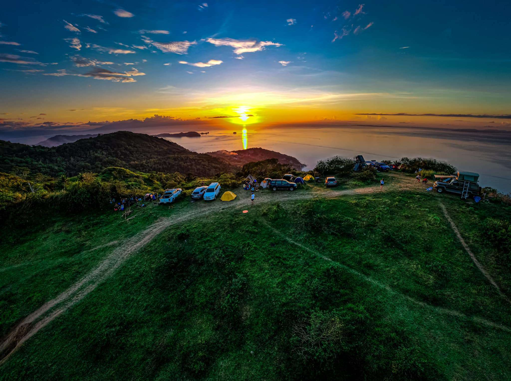
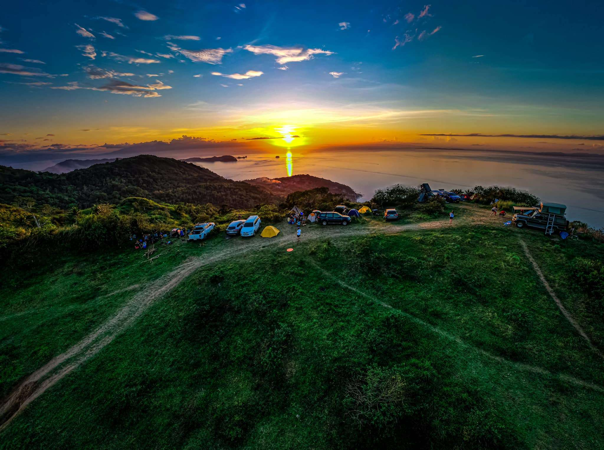

Discover Mabini’s Paradise

 

Top Attractions

Cathedral Rock
The Cathedral Rock is one of the most popular diving spots in Mabini, Batangas. Beneath the surface, two large rocks form a structure that looks like church pillars, with a cross placed between them years ago. The site is home to vibrant corals and a variety of fish, attracting both beginner and experienced divers.

Camp Netanya Resort and Spa
Camp Netanya Resort and Spa in Ligaya, Mabini, Batangas is often called the “Little Santorini of the Philippines” because of its white-and-blue Greek-inspired architecture overlooking the sea. It’s a favorite spot for travelers who want a mix of relaxation and adventure, offering stunning ocean views, an infinity pool, and easy access to nearby dive sites.

Mt. Gulugod Baboy
Mt. Gulugod Baboy in Mabini, Batangas is a beginner-friendly hiking destination known for its rolling hills and breathtaking 360-degree views. From the summit, visitors can see Batangas Bay, Balayan Bay, and even nearby islands on a clear day. It is a popular spot for day hikes, camping, and catching the sunrise or sunset above the sea.